REAR DIFFERENTIAL CARRIER OIL SEAL > REPLACEMENT > Preparation

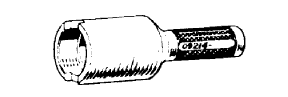 | 09214-76011 | Crankshaft Pulley Replacer |
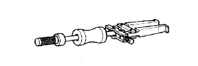 | 09308-00010 | Oil Seal Puller |
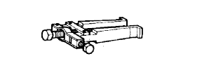 | 09308-10010 | Oil Seal Puller |
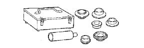 | 09316-60011 | Transmission & Transfer Bearing Replacer |
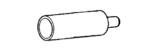 | (09316-00011) | Replacer Pipe |
| (09316-00021) | Replacer A | |
 | 09330-00021 | Companion Flange Holding Tool |
 | (09330-00030) | Pin |
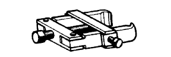 | 09556-22010 | Drive Pinion Front Bearing Remover |
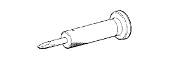 | 09930-00010 | Drive Shaft Nut Chisel |
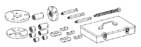 | 09950-30012 | Puller A Set |
| (09951-03010) | Upper Plate | |
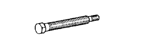 | (09953-03010) | Center Bolt |
| (09954-03010) | Arm | |
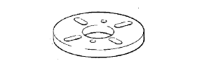 | (09955-03030) | Lower Plate 130 |
| (09956-03040) | Adapter 22 |
| Brass bar | - |
| Chisel | - |
| Dial indicator with magnetic base | - |
| Feeler gauge | - |
| Micrometer | - |
| Needle nose pliers | - |
| Plastic hammer | - |
| Press | - |
| Prussian blue | - |
| Tape | - |
| Torque wrench | - |
| Vise | - |
| Item | Capacity | Oil type and viscosity |
| Front differential | 1.85 to 1.95 liters (1.96 to 2.06 US qts.,1.63 to 1.71 Imp. qts.) | Toyota Genuine Differential gear oil LT 75W-85 GL-5 or equivalent |
| Rear differential (for Standard) | 4.15 to 4.25 liters (4.39 to 4.49 US qts., 3.66 to 3.74 Imp. qts.) | |
| Rear differential (w/ Lock) | 4.10 to 4.20 liters (4.34 to 4.43 US qts., 3.60 to 3.69 Imp. qts.) | |
| Rear differential (for LSD) | Toyota Genuine Differential gear oil LX 75W-85 GL-5 or equivalent |
 | 09010-3C100 | Set, Hexagon Wrench | - |
 | (09013-6C130) | Socket Hexagon 10mm | - |
 | 09011-4C120 | Socket Wrench 39mm | - |
 | 09025-00010 | Torque Wrench (30 kgf-cm) | - |
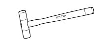 | 09051-1C110 | Plastic Hammer 420g | - |
 | 09051-1C410 | Pin Punch 5 | - |
 | 09904-00010 | Expander Set | - |
 | (09904-00020) | No. 1 Claw | - |
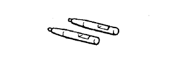 | (09904-00040) | No. 3 Claw | - |
 | 09905-00013 | Snap Ring Pliers | - |
| (09904-00090) | Claw Set | - |
| Toyota Genuine Seal Packing 1281, Three Bond 1281 or equivalent | - |
| Toyota Genuine Adhesive 1324, Three Bond 1324 or equivalent | - |
| Toyota Genuine Adhesive 1360K, Three Bond 1360K or equivalent | - |